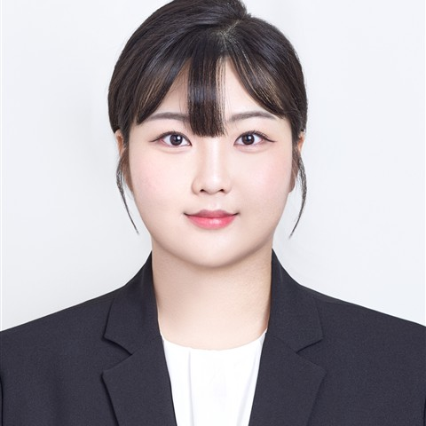

LEE JIYANG · PORTFOLIO 2026
AI 기능을 서비스로
구현하고 검증하는
개발자 이지양.
센서에서 음성 대화까지, 데이터에서 운영 판단까지.
FastAPI로 서비스 흐름을 연결하고,
LangGraph로 운영 판단을 돕는 에이전트를 구현합니다.

01 / SELECTED WORK
대표 프로젝트와
구현 근거.
대표 프로젝트의 동작을 체험하고,
구현 과정과 검증 범위를 살펴보세요.
02 / CAPABILITIES
프로젝트로 확인하는
개발 역량.
03 / MORE WORK
Computer Vision과 IoT.
04 / ABOUT
시스템의 양 끝을
이해하는 개발자.
제어계측공학에서 배운 센서와 신호의 이해를 바탕으로, AI 모델이 사용자에게 닿는 과정을 만듭니다.
문제가 생기는 지점과 복구 경로를 함께 생각합니다. 기능의 결과뿐 아니라 어떤 조건에서 동작했고, 어디까지 확인했는지 설명하는 개발을 지향합니다.
GitHub에서 코드 보기 ↗EDUCATION & EXPERIENCE
- 2026.07
- HDC NOVA 생성형 AI 개발 과정960시간 수료
- 2025.02
- 국립부경대학교제어계측공학과 졸업 · 4.05 / 4.5
- 2024.12
- 전기기사 취득
- 2024.08
- IoT-X 메이커톤 장려상AI 음성인식 스마트 조명 · 팀장
- 2022–23
- 룰레오 기술대학교 교환학생스웨덴 · 10개월
LET’S TALK